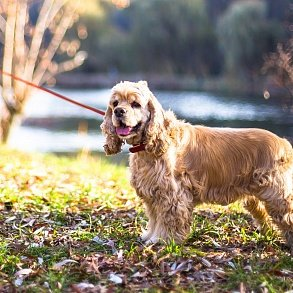

Порода Американский Кокер-спаниель
- Название породы: Американский кокер-спаниель
- Страна происхождения: США
- Вес: 7-14 кг
- Рост (высота в холке): кобели 36,8-39,4 см, суки 34,3-36,8 см
- Продолжительность жизни: 13-14 лет
Внешний вид
Американские кокер-спаниели – самые миниатюрные охотники.Они ненамного меньше английских кокеров (средний рост – 34,3-34,9 см), но их мордочки значительно короче.
Помимо всего прочего, у «американцев» более гламурный облик,которым они обязаны своей атласной шерстке.
